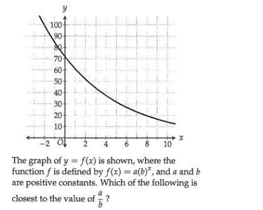

\(\sqrt[4]{x^3} \cdot \sqrt[12]{x^5}\)
The given expression is equivalent to \(\sqrt[m]{x^n}\), where \(m\) and \(n\) are positive constants each less than 10 and \(x > 1\). What is the value of \(\frac{m}{n}\)?
Your Answer:\(\sqrt[4]{x^3} \cdot \sqrt[12]{x^5}\)
The given expression is equivalent to \(\sqrt{x^m}\), where \(m\) and \(n\) are positive constants each less than 10 and \(x > 1\). What is the value of \(\frac{m}{n}\)?
Your Answer:Two numbers, \(p\) and \(q\), are each greater than zero, and the square of \(p\) is equal to the cube root of \(q\). For what value of \(x\) is \(p^{1-x}\) equal to the square root of \(q\)?
Your Answer:\[\frac{10 \sqrt[6]{9x^{48}}}{\sqrt[4]{6^4 x}}\]
The given expression is equivalent to \(a x^b\), where \(a > 0\), \(b > 0\), and \(x > 1\). What is the value of \(ab\)?
Your Answer:\(V = P(1 - r)^t\)
The value \(V\) of a car depreciates over \(t\) years according to the given equation, where \(P\) is the original price and \(r\) is the annual rate of depreciation. Which of the following correctly expresses \(r\) in terms of \(V\), \(P\), and \(t\)?
\(B + 8A = 5(4C + B)\)
The given equation can be rewritten as \(B = mA - nC\), where \(m\) and \(n\) are constants. What is the value of \(m + n\)?
Your Answer:\(\sqrt{x + 9} = \frac{x}{2} - 3\)
What is the solution to the given equation?
Your Answer:\(3x + a(3 - 2x) = 12 - 7x\)
In the given equation, \(a\) is a constant. The equation has no solution. What is the value of \(a\)?
\(g(x) = \left| \frac{7}{9} x - 40 \right|\)
The function \(g\) is defined by the given equation. For which of the following values of \(a\) does \(g(a) = a\)?
\(4x^2 + mx + 9 = (2x + n)^2\)
In the given equation, \(m\) and \(n\) are constants and \(n < 0\). If the equation is true for all values of \(x\), what is the value of \(m + n\)?
[Graph shown: quartic curve touching the x-axis at approximately x = -3, -2, 2, 3]
Which of the following could be the equation of the graph shown?
The function \(f\) is defined by \(f(x) = b \cdot a^x\), where \(a\) and \(b\) are positive constants, and \(g(x) = f(x + 2)\). The graph of \(y = f(x)\) in the \(xy\)-plane passes through the points \((0, 36)\) and \((-3, \frac{9}{16})\). Which equation defines the function \(g\)?
\(f(x) = b\sqrt{a - x} + 7\sqrt{a - x}\)
For the function \(f\), \(a\) and \(b\) are constants and \(f(16) = 0\). If \(f(9) > 0\), which of the following could be the value of \(a + b\)?
[Table shown: three pairs of (x, y) values with constant p, linear relationship]
What is the slope of the line that represents this relationship in the x-y-plane?
The graph of the equation \(5x - 8y = k\), where \(k\) is a constant, is a line in the \(xy\)-plane. The line has an \(x\)-intercept at \((m, 0)\) and a \(y\)-intercept at \((0, n)\), where \(m\) and \(n\) are constants. What is the value of \(\frac{m}{n}\)?
A recipe suggests sweetening honey tea with sugar according to the equation \(s = 10 - 2h\), where \(s\) is the amount of sugar, in teaspoons, that should be added to a tea beverage containing \(h\) teaspoons of honey. What is the best interpretation of 2 in this context?
A teacher printed sticker sheets with 7 stickers on each sheet. At a school party, she gave out 2 stickers to each student who attended. The relationship between the number of students who attended the party, x, and the number of sticker sheets that the teacher printed, y, is represented by the equation \(7y - 32 = 2x\). What is the best interpretation of 32 in this context?
In 2016, County A and County B collected the same amount of taxes. In 2017, the amount of taxes collected by County A decreased by 25% and the amount of taxes collected by County B increased by 20%. If County A collected 60 million dollars of taxes in 2017, what was the amount of taxes, in millions of dollars, County B collected in 2017?
The number \(r\) is 70% less than the number \(s\). The number \(r\) is 60% greater than the number \(t\). If \(s = 180\), what is the value of \(t\)?
Your Answer:The amount of data, in gigabytes, stored in a database increases by 2% every 15 hours. If 16 gigabytes worth of data are currently stored in the database, which of the following functions \(g\) gives the amount of data, in gigabytes, that will be stored in the database \(t\) days from now?
The function \(f\) is defined by:
\[f(x) = \frac{x^2 + ax + b}{2x + c}\]
where \(a\), \(b\), and \(c\) are constants. The graph of the function \(f\) in the \(xy\)-plane does not intersect the line \(x = 4\).
If \(f(6) = f(8) = 0\), what is the value of \(a + b + c\)?
Your Answer:[Graph shown: exponential function graph]
